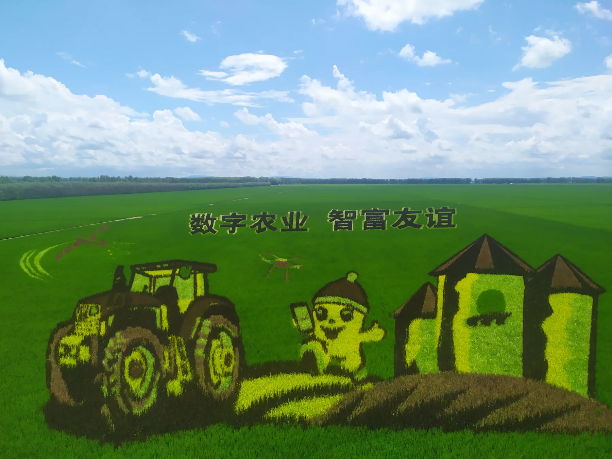

从田里的拖拉机到车间里的干燥机
1950年代建场时，大型机具被配进一整套生产环节。拖拉机牵引犁具翻地，播种机在整好的地上作业，联合收割机把收割、脱粒等环节接起来。粮食离开田间后，还要运输、干燥和入仓。
馆内照片里，苏联专家伏罗洛夫指导安装谷物干燥机。干燥能降低新收谷物的水分，便于储存，也决定了大面积收获后能否及时处理。展厅还记录了外地人员来场学习，这里的经验也随人和装备传播到其他地方。

从引进成套设备到使用国产农机
展牌记载，1960年农场配备36台国产东方红–54履带式拖拉机，1970年又配备14台东方红–75。园方记录的田间机械化作业程度，从1960年的40%提高到1966年的83%。机械化生产逐步从主要依赖引进设备转向使用国产农机。
刘瑛与童延兰怎样走上驾驶席
展签把联合收割机称为“康拜因”，这是当时常用的音译名称。女康拜因手刘瑛在开荒动员大会上的照片，与她和五一劳动奖章获得者童延兰切磋驾驶技术的照片并排。读这组照片时，可以从机手的角度想象一季收获：观察倒伏和成熟度、在地头转向、协调粮车接粮，还要留出停机检修的时间。
1978年，五分场二队再做一次试验
1978年，友谊农场五分场二队开展现代化农业试点，引进美国的成套农机和耕作技术。几种机具配套完成耕整、播种、田间管理和收获，对地块连片、操作分工与检修保障都提出了相应要求。1978年《人民日报》的现场报道把这里作为机械化农业怎样改变劳动方式的例子。
旧称五分场二队的地点，今天可从第五管理区第二作业站的万亩良田辨认出来。先了解农机博览园里不同年代的机器，再看这里成片地块、田块之间的作业通道，就能把展品与仍在运行的农业生产连起来。
2001年，五分场二队开始精准农业试点
1978年的试点首先解决成套机械怎样在连片地块上协同作业。据博览园介绍五分场二队的专题展板，2001年，农业部批准在这里开展精准农业试点，项目投资1200万元。试点配备带卫星定位和产量监测的凯斯2366联合收割机、变量施肥播种机与配套种肥车，以及地面GPS差分纠偏设备。
收割机把收获量和田间位置对应起来，能记录一块地里哪些位置产量较高或较低。变量设备可根据田块位置和预设方案调节施肥量。展板还记载，农场在2004至2005年继续引进迪尔和凯斯拖拉机、联合整地机等设备，2010年起进一步引进40套拖拉机自动导航驾驶操作系统及2个地面网络纠偏基站。
稻田画怎样种出来

这幅稻田画里，拖拉机、无人机、手持设备的人物和粮仓组成一幅图，田里还种出了“数字农业 智富友谊”八个字。走到田边近看是一行行稻株，登高才容易看清画面。
制作稻田画，要把图案放样到田里，再按轮廓分区栽种不同叶色的水稻。秧苗长起来后，深浅不同的叶色才显出图形。它让人看到现代农业怎样把品种选择、田间测绘和精细栽植用在观光上。
画里的无人机和粮仓也有生产中的对应物。按农业农村部网站刊载的2022年秋收报道，友谊分公司当时已用数字平台汇集农业生产数据；在稻田里，智能闸门还能根据监测数据调节进水。稻田画展示的是农艺与设计，数字农业还要解决水怎么用、农机怎么走、粮食怎么收。
今天怎样耕种和管护黑土
友谊的田里有水稻、玉米和大豆。卫星导航可以帮助农机保持直线、减少重复碾压，监测和作业记录能帮助管理人员了解田块差异。水稻田看得到渠、埂和水层，玉米与大豆田则呈现另一种作业节奏。
黑土的肥力来自长期积累的有机质，耕作和覆盖方式会影响表土的保存。垦区实践包括秸秆还田、轮作以及按田块条件选择耕作方式。去看秋收时可以同时留意地表覆盖和排水沟。大型机具之外，这些是理解一片良田如何持续生产的细节。
查阅来源
- 五分场二队试点亲历 · 友谊县人民政府
- 五分场二队1978年现场报道 · 人民日报历史版
- 农业生产与黑土考察 · 南京大学历史学院
- 友谊农场的科技应用 · 央广网
- 黑土保护科研与田间实践 · 农业农村部门资料
- 友谊农场稻田画与智慧农场实习记录 · 东北农业大学
- 彩叶水稻与稻田画测绘 · 上海市农业科学院
- 2022年秋收与数字农业平台 · 农业农村部网站
- 稻田智能闸门与水层管理 · 人民日报海外版